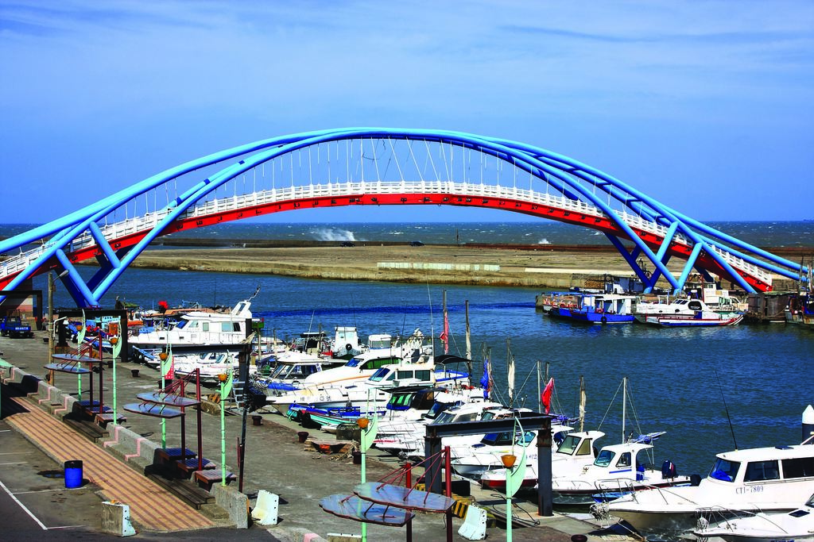
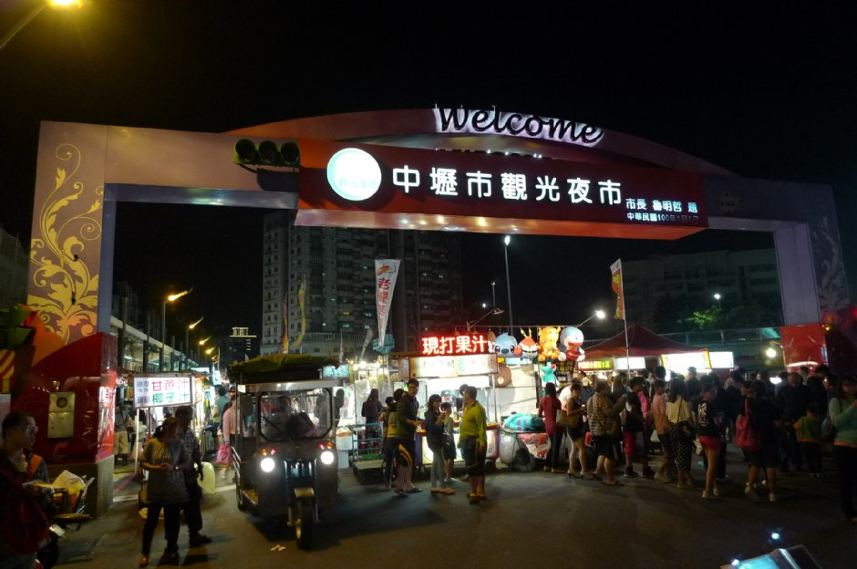

桃園景點

大溪老街
桃園最早發展的地方，各商號融合巴洛克式繁飾主義和閩南傳統裝飾圖案，形成一種大溪專有的特色

永安漁港
是中壢區漁會轄區內的唯一漁港，屬於第二類漁港，亦為臺灣唯一以客家族群為主體的漁港，漁獲量主要供銷外縣市為主

石門水庫
曾經是遠東最大的水庫，目前亦是台灣北部的重要水庫之一，一年四季，湖光山色，風景秀麗

小人國主題樂園
位於桃園市龍潭區，成立於民國73年7月7日，是台灣著名的主題遊樂園。裡頭有4種不同的遊樂主題，其中以『迷你世界』最著名

小烏來天空步道
懸掛於小烏來瀑布上方，遊客只要站上距離瀑布底70公尺高的玻璃平台上，就能居高臨下欣賞小烏來溪谷的秀麗美景

中壢觀光夜市
整條夜市長約700公尺，人潮密集度相當高，也早已成為桃園數一數二大的夜間市集，更成為當地民眾夜間逛街的好選擇